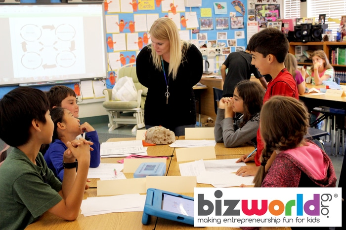

<?xml version="1.0"?>
<rss version="2.0">
	<channel>
		<title>bizworld.org - Case Studies Teachers</title>
		<link>https://bizworld.org/</link>
		<item>
			<title>BizWorld Taught My Students Real-World Skills</title>
			<link>https://bizworld.org/Events-NEW/68/BizWorld-Taught-My-Students-Real-World-Skills</link>
			<description>
				<![CDATA[<br />For 4 years, Lisa Holland, a teacher at Pershing Elementary School in San Juan USD, has been teaching the BizWorld program to her 4th grade GATE students. Holland loves that her students learn…]]>
			</description>
			<pubDate>Mon, 30 Nov -001 00:00:00 -0800</pubDate>
		</item>
		<item>
			<title>BizWorld is a Must Teach For Me</title>
			<link>https://bizworld.org/Events-NEW/69/BizWorld-is-a-Must-Teach-For-Me</link>
			<description>
				<![CDATA[<br />Tanya Wright, a 6th grade teacher at White Cliffs Middle School in Kingman, Arizona who has been teaching the BizWorld program for more than eight years, has seen her students develop the ke…]]>
			</description>
			<pubDate>Mon, 30 Nov -001 00:00:00 -0800</pubDate>
		</item>
		<item>
			<title>21st Century Skills Come to Life</title>
			<link>https://bizworld.org/Events-NEW/72/21st-Century-Skills-Come-to-Life</link>
			<description>
				<![CDATA[<br />February 2015
				
				 
				 
				 
				 
				 
				Meet our Educator of the Month: Gina Ulrich
				Recently, BizWorld.org’s Chief Operating Officer, Carla Foster, and Education Manager, Janet Lee, had the privilege o…]]>
			</description>
			<pubDate>Mon, 30 Nov -001 00:00:00 -0800</pubDate>
		</item>
		<item>
			<title>"Best unit I have taught in my 14 years of teaching!"</title>
			<link>https://bizworld.org/Events-NEW/76/Best-unit-I-have-taught-in-my-14-years-of-teachingI</link>
			<description>
				<![CDATA[<br />December 2014
				
				Meet our Educator of the Month: Kathryn Roehm
				Our teacher spotlight provides an opportunity to highlight one of the many inspiring educators out there who are using BizWorld.org…]]>
			</description>
			<pubDate>Mon, 30 Nov -001 00:00:00 -0800</pubDate>
		</item>
		<item>
			<title>Collaboration, Critical thinking, and Creativity</title>
			<link>https://bizworld.org/Events-NEW/77/Collaboration-Critical-thinking-and-Creativity</link>
			<description>
				<![CDATA[<br />April 7, 2015
				 
				Meet our Educator of the Month: Sergio Hernandez
				This month we’re giving a huge shout-out to Sergio Hernandez from Katherine Smith Elementary in San Jose, CA for taking t…]]>
			</description>
			<pubDate>Mon, 30 Nov -001 00:00:00 -0800</pubDate>
		</item>
	</channel>
</rss>